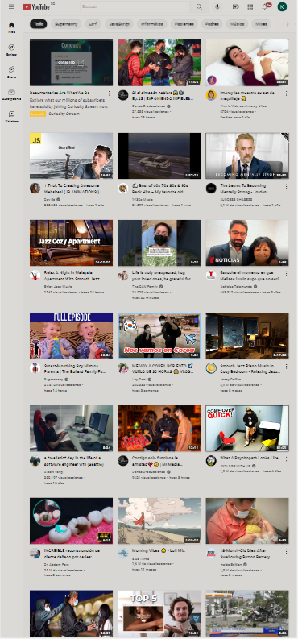

alignment
Netflix

this website has an alignment principle because all the movies are align pretty well one next to each other, and there also align from top to bottom.
proximity
Youtube
This websit has a proximity principle because all of the videos have the exact same proximity from each other, in fact for me this website and Netflix they both have alignment and proximity principles.
contrast
Tu sushi 305
This website is a sushi web and has a contrast principle is made with 3 colors primarily which are black, green and white and all of them make a contrast